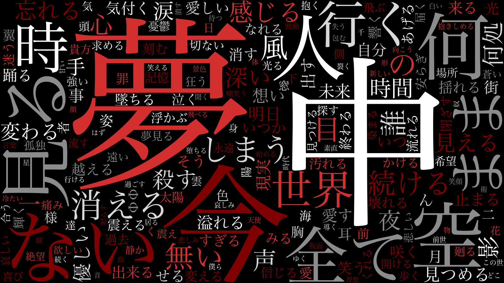
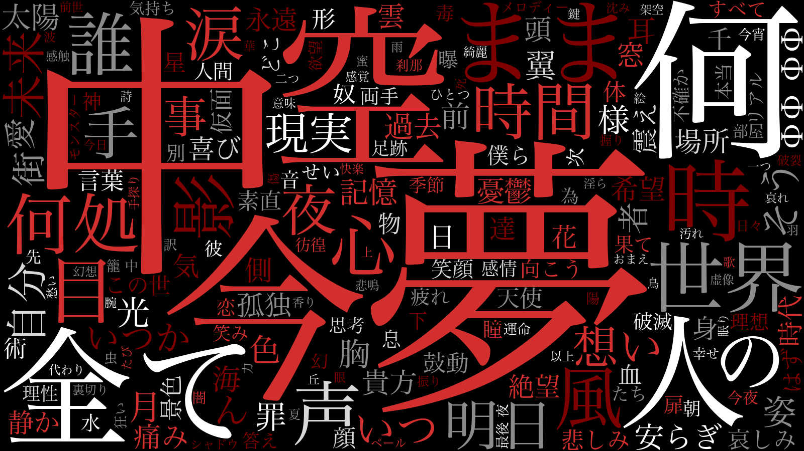
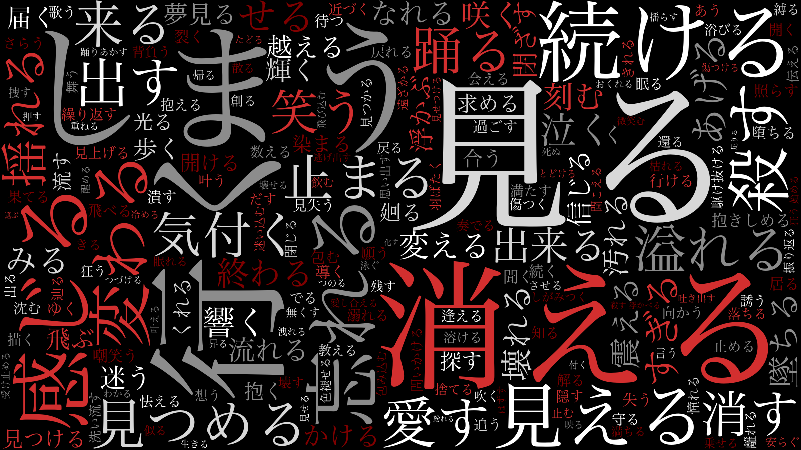
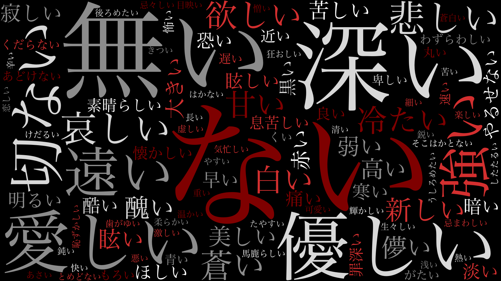
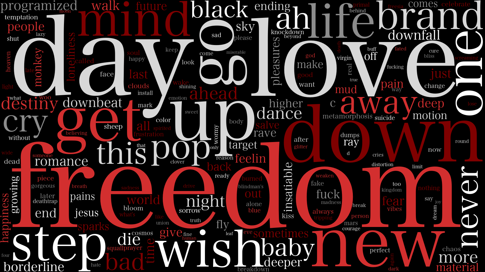

Laputaの歌詞をワードクラウドで見る
LaputaのCD音源としてクレジットされている115曲のうち、 歌詞が確認できない5曲を除き、歌詞が有効と判断された110曲を対象に、 歌詞に登場する言葉を集計し、ワードクラウドを作成した。
※「私が消える」を含む。「舌」は「硝子の肖像」のシングル版では歌詞の表記がすべてカタカナであるため、 「Coupling Collection + xxxk [1996-1999 Singles]」に収録されている「～00mix」バージョンの歌詞を採用した。 「Insatiable」は同じ曲名でも歌詞が異なる部分が多いため、 「眩～めまい～暈」バージョンと「眩めく廃人」バージョンをそれぞれ1曲としてカウントした。
ワードクラウドでは、出現回数の多い言葉ほど大きく表示される。
実際に集計してみると、「夢」「中」「今」「ない」「空」「人」「見る」「全て」「何」など、 さまざまな言葉が上位に並んだ。
また、品詞ごとに分けてみると、それぞれ違った特徴が現れる。
ここで大きく表示されている言葉が、そのままLaputaの歌詞における「重要な言葉」を意味するわけではない。 歌詞全体を一つのデータとして眺めることで、普段聴いているだけでは気づきにくい言葉の傾向を見るための、 一つの方法として捉えている。
言葉を一つずつ読むのとは少し違った角度から、Laputaの歌詞全体を眺めてみる。
ワードクラウド
総合
名詞・動詞・形容詞を合わせた、歌詞全体のワードクラウド。
（名詞・動詞・形容詞の合計。Englishは除く。）

名詞
Laputaの歌詞に登場する名詞の出現傾向。

動詞
歌詞の中で描かれる動作や変化に注目したワードクラウド。

形容詞
歌詞の中で描かれる感情や状態を表す言葉に注目したワードクラウド。

English
歌詞中に登場する英単語の出現回数をランキングにしたもの。

このワードクラウドから
110曲の歌詞を集計し、出現回数の多い言葉をランキングにして、ワードクラウドにしてみた。
ワードクラウドは、歌詞の意味を自動的に解釈するものではない。 けれど、実際に並べてみると、普段歌詞を読んでいるだけではあまり意識していなかった言葉が、 思いがけず大きく表示されていることもある。
このランキングやワードクラウドを見て、 「こんな言葉が多いんだ」 「この言葉は、どんな曲で使われているんだろう」 など、何か気づくことがあれば面白いと思う。
私自身も、ここから気になった言葉をあらためて歌詞の中で探してみたいと思っている。
分析方法
今回の分析では、Laputaの歌詞データをCSV形式で整理し、そのデータをPythonで処理した。
1．歌詞データの作成
分析対象となった110曲の歌詞をCSVに入力し、分析用のデータとしてまとめた。
2．形態素解析
PythonのJanomeを使用して歌詞を単語単位に分割した。
その際、活用によって形が変わる単語については、基本形に戻して集計した。
例えば、「見る」「見た」などを別々の単語として数えるのではなく、 基本形にまとめて集計することで、言葉の出現傾向を見やすくしている。
3．品詞による分類
形態素解析によって分類された単語のうち、今回の分析では主に、
- 名詞
- 動詞
- 形容詞
を抽出した。
一方で、「僕」「君」「私」「あなた」などの人称代名詞や、 「こと」「もの」「よう」など、歌詞の分析上あまり特徴を示さないと考えられる一般的な語は、 ストップワードとして除外している。
4．出現回数の集計
抽出した単語を集計し、それぞれの出現回数をランキング化した。
総合ランキングのほか、名詞・動詞・形容詞ごとのランキングも作成している。
5．英単語の分析
日本語の単語とは別に、歌詞に登場する英単語についても抽出・集計した。
6．ワードクラウドによる可視化
集計した出現回数をもとに、PythonのWordCloudを使用して可視化した。
出現回数の多い単語ほど大きく表示されるため、ランキング表とは違った形で、 歌詞全体の言葉の傾向を見ることができる。
使用した分析ツール
今回の分析では、以下のツール・ライブラリを使用した。
- Python 3.9.6
- pandas — CSVデータの読み込み・整理・集計
- Janome — 日本語の形態素解析
- WordCloud — ワードクラウドの生成
- Counter — 単語の出現回数の集計
- re — 不要な文字や記号の除去
- Pathlib — ファイルの読み込み・保存
実際の分析では、これらをPythonのコードで組み合わせ、 歌詞データの読み込みから単語の抽出、集計、ランキングのCSV保存、 ワードクラウドの画像生成までを行っている。